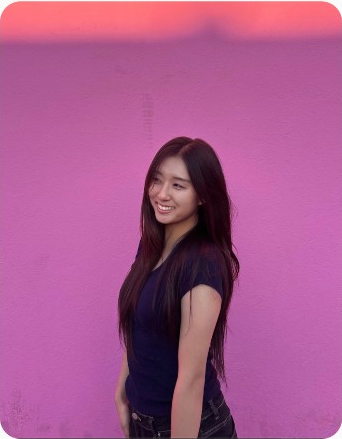

Multidisciplinary Designer and Creative.
I'm based in Los Angeles, studying Art and Design at USC's Roski School and Digital Experiences at the Iovine and Young Academy. I work at the intersection of storytelling and technology, drawn to the tech, fintech, fashion, and entertainment spaces.
I grew up on the internet, shaped by online communities that showed me how thoughtful craft turns ordinary moments into ones worth returning to. As a shy person, being creative always kept me going, whether through drawing or making things. That instinct followed me from an art background into UI/UX, where I saw design as a way to combine strategic thinking with storytelling, building products that feel intentional and human.
I design because I love connecting people through thoughtful interactions. My goal is to build belief, connection, and community, one product at a time.